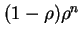
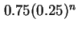
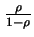
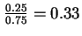
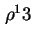
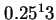
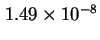
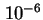
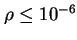
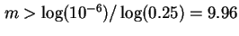

Next:
หัวข้อสรุป
Up:
ตัวอย่าง คิว
Previous:
ตัวอย่าง คิว
Contents
Index
ตัวอย่าง:
ใน Network Gateway ทำหน้าที่ส่งผ่านแพ็คเกตในระบบเครือข่าย อัตราการขอเข้าใชับริการ Gateway ของแพ็คเกตมีค่าเท่ากับ 125 แพตเกตต่อวินาที (pps) ค่าดังกล่าวได้จากการวัด Gateway ใช้เวลา 2 ms ในการส่งผ่านข้อมูล ใช้แบบจำลอง
จงวิเคราะห์ Gateway
หาความน่าจะเป็นที่จะเกิดบัฟเฟอร์ล้น ถ้า Gateway มีเพียง 13 บัฟเฟอร์
ระบบต้องการจำนวนบัฟเฟอร์เท่าไร ถ้าต้องการจำกัดจำนวนแพ็คเกตสูญหายต่ำกว่าหนึ่งแพ็คเกตในล้านแพ็คเกต
อัตราการเข้ารับบริการ (Arrival Rate)
= 125 pps
อัตราการบริการ (Service Rate)
= 1/0.002 = 500 pps
ค่าภาระงาน (Utilization) ของ Gateway
=
= 0.25
ค่าความน่าจะเป็นที่มี
แพ็คเกตใน Gateway =  = 
ค่าเฉลี่ยของจำนวนแพ็คเกตใน Gateway =  = 
ค่าเฉลี่ยของเวลาที่แพ็คเกตใช้ใน Gateway =
ms
ค่าความน่าจะเป็นที่จะเกิดบัฟเฟอร์ล้น
=
P(มีมากกว่า 13 แพ็คเกตใน Gateway)
=
 =  = 
15 แพ็คเกตในล้านแพ็คเกต
เพื่อจำกัดจำนวนแพ็คเกตสูญหายต่ำกว่า : 
หรือ

เพราะฉะนั้น เราต้องการบัฟเฟอร์ทั้งสิ้น 10 บัฟเฟอร์เพื่อจำกัดจำนวนแพ็คเกตสูญหายต่ำกว่า
การคำนวณเกี่ยวกับจำนวนบัฟเฟอร๎ในสองข้อย่อยสุดท้ายเป็นการประมาณค่าอย่างหยาบ การคำนวณที่ถูกต้องระบบคิวจะต้องใช้แบบจำลอง
Vara Varavithya 2002-03-09